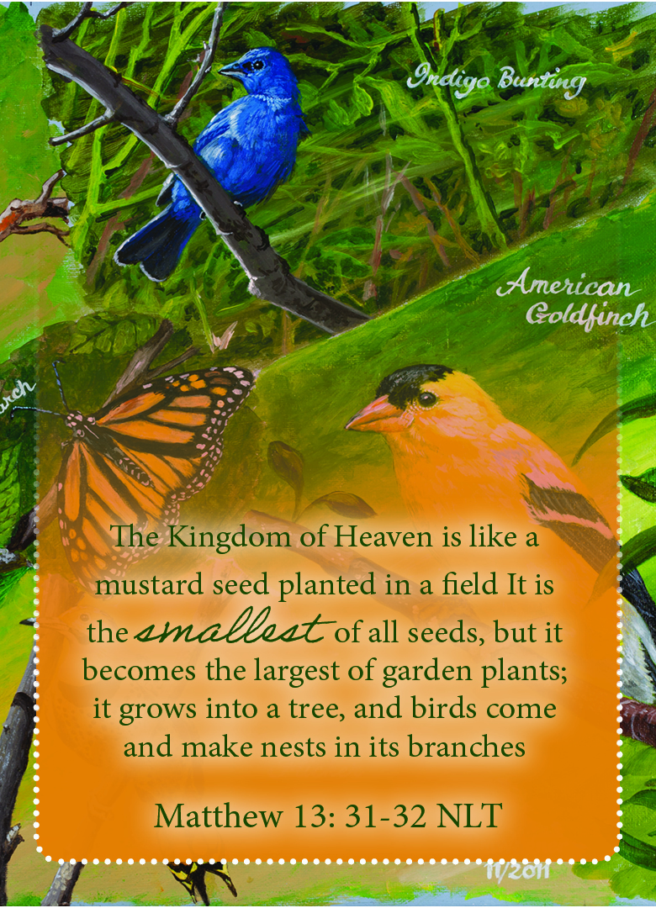

Matthew 13: 31-32 NLT
,

Pray the Scripture
Father, thank You for Your precious Son Jesus. Your Word says, once I accept Jesus as my Lord & Saviour and I live
in right standing with Him, by His blood & the finished work of the cross, my name is written in the Book Of Life.
Thank You Lord for bestowing the gift of salvation when Your Son chose to give His life for me. Help me continue
to spread the good news of the gospel of Jesus, planting seeds of hope and joy. Lord I ask that You would ready
the soil of the hearts of whom You want me to be a witness to. Help me represent Jesus righteously by partnering
with Holy Spirit. Father continue to prune me, and remove any fruits that is not of Your nature. I ask for
boldness & courage to speak the truth of Your Word, as
I continue to give You my yes, in adding sheep to Your kingdom.
In The Name of Jesus Amen
Next Card
Back To Prayer Card List